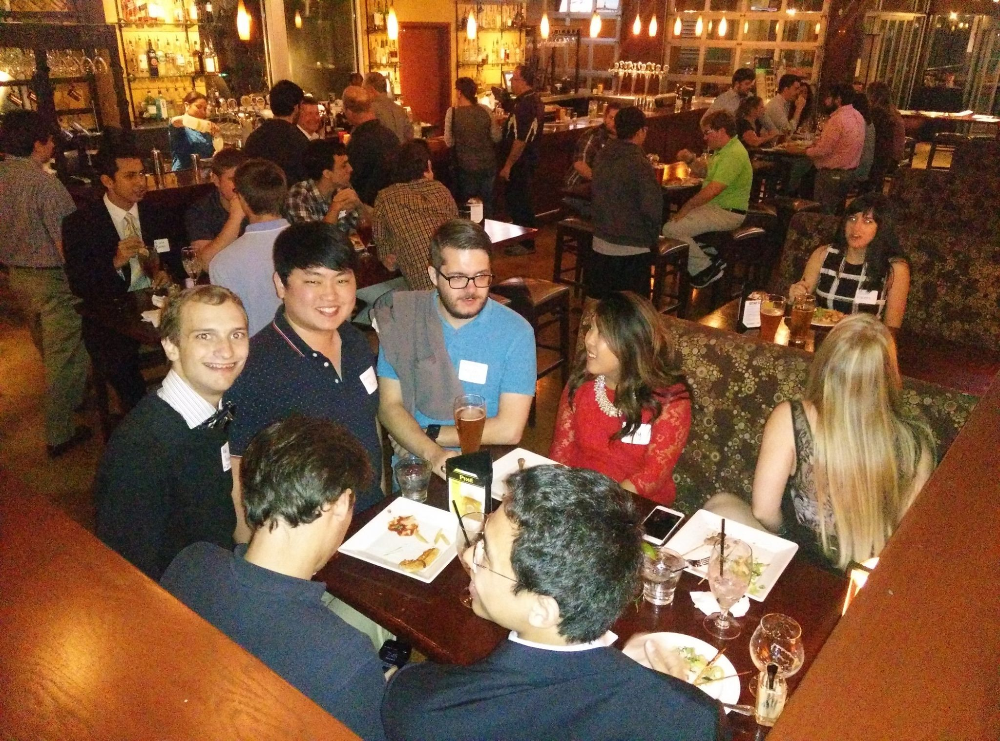
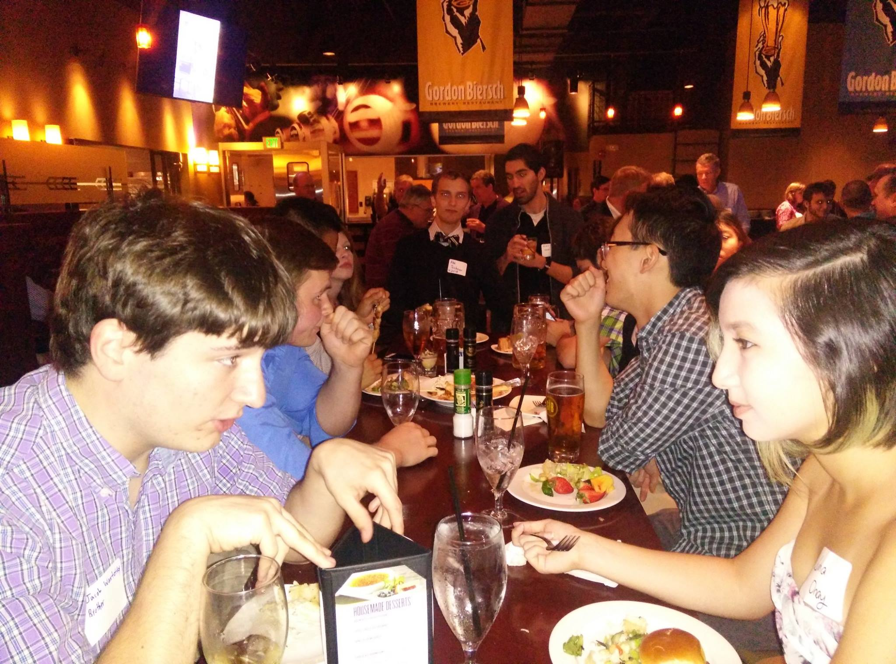
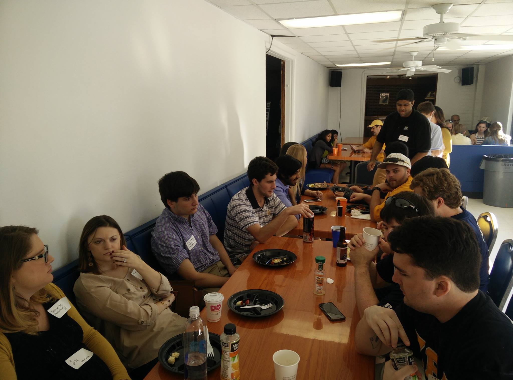
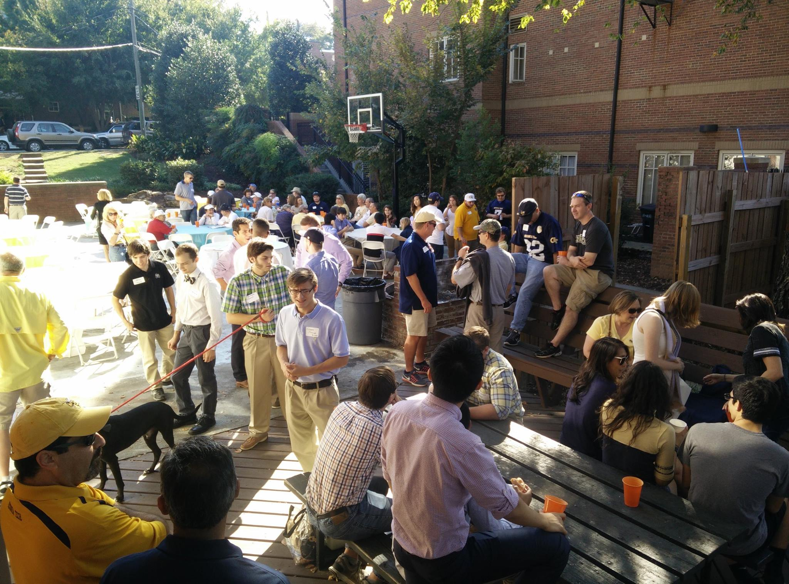
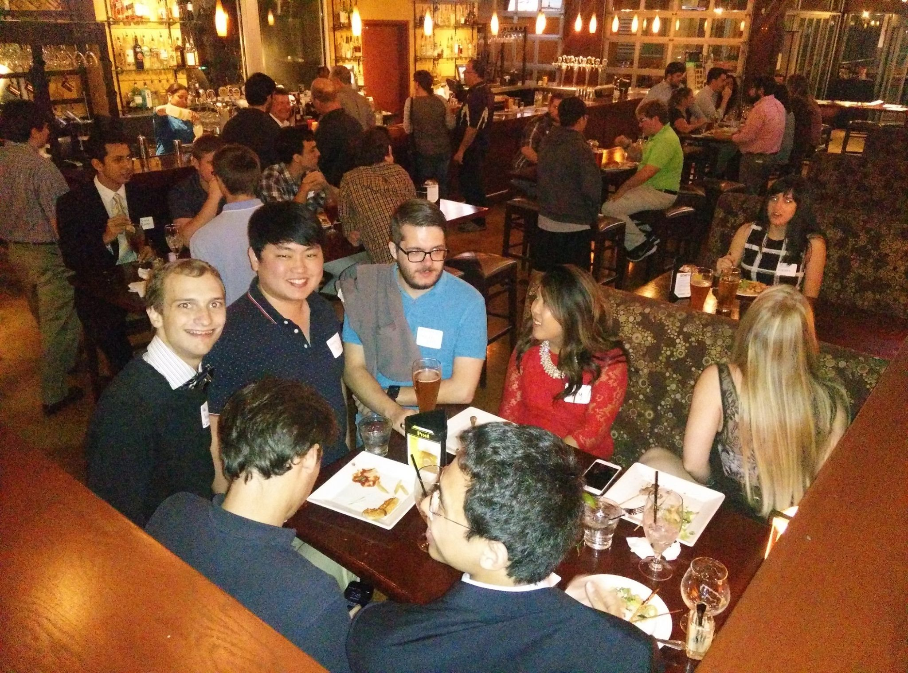
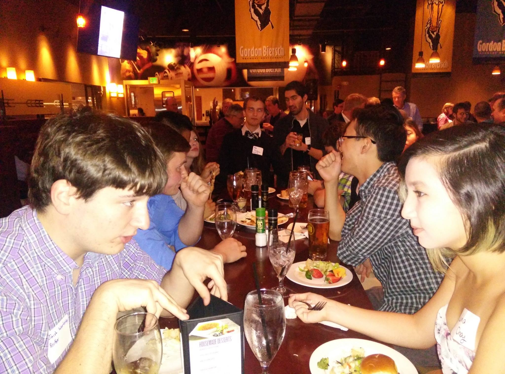
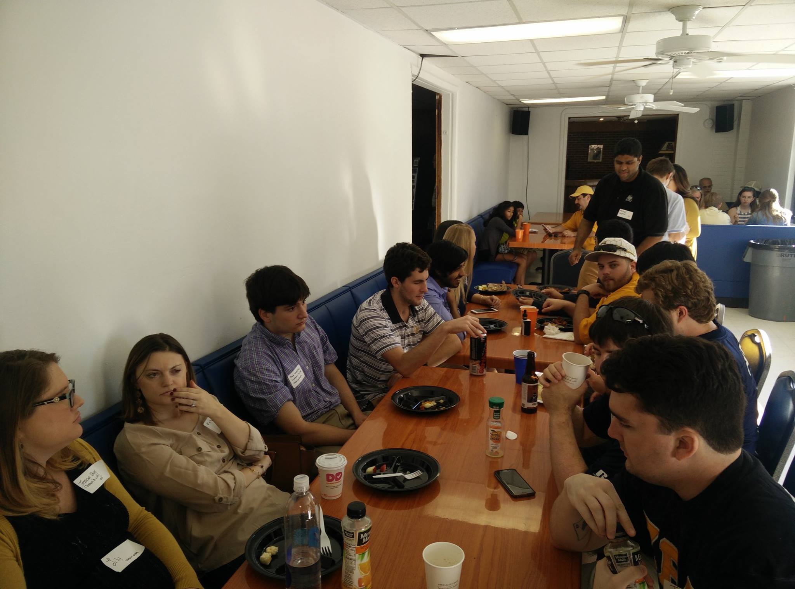
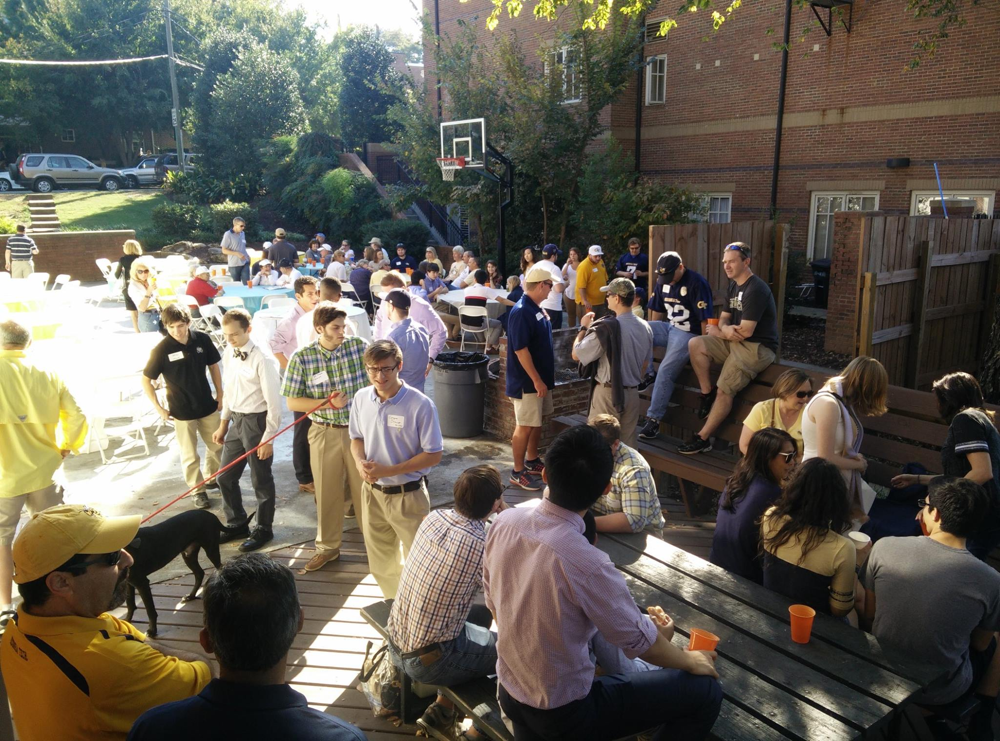
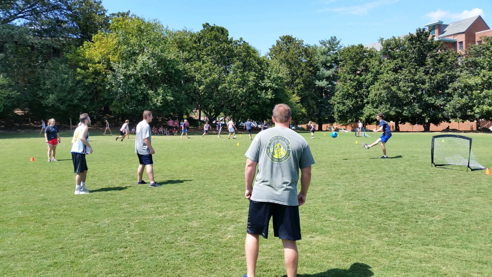
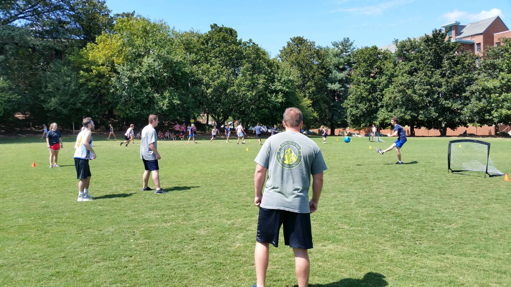

Welcome to Zeta Beta Tau Fraternity
The brothers of ZBT are successful leaders and gentlemen. Established nationally in 1898 and at Georgia Tech in 1916,
our brotherhood is an established institution of good men, good work, and good times.
 









 
